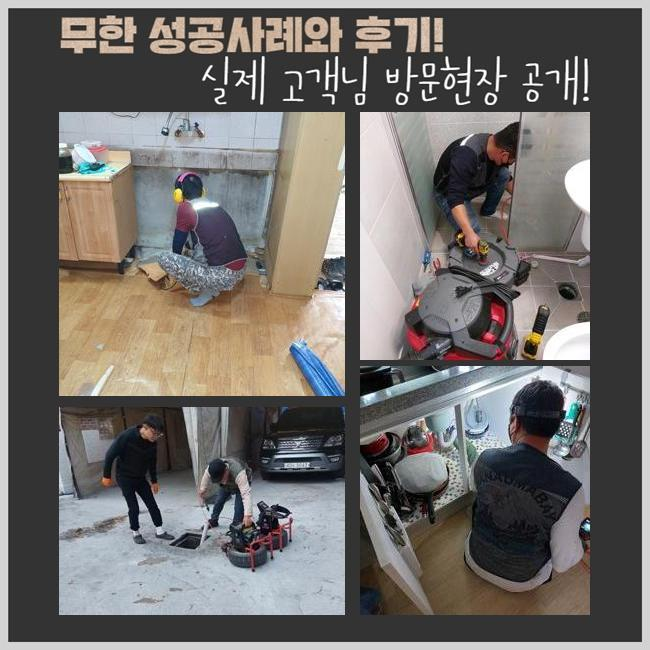
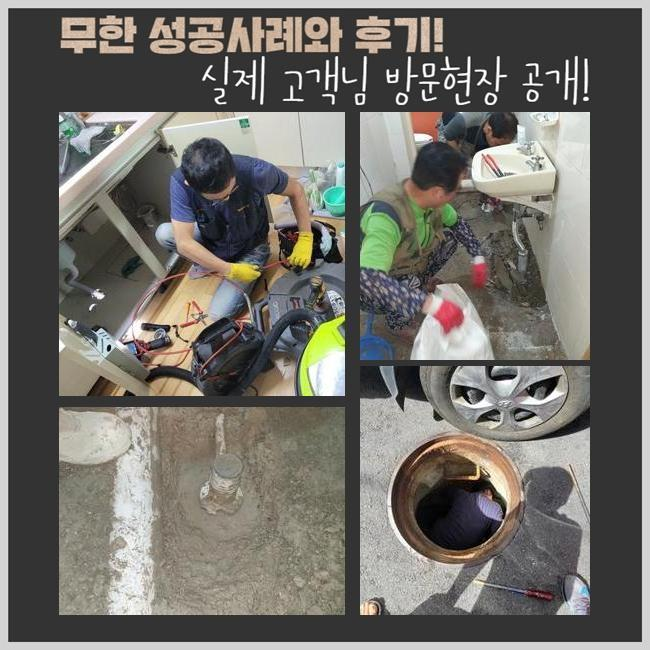
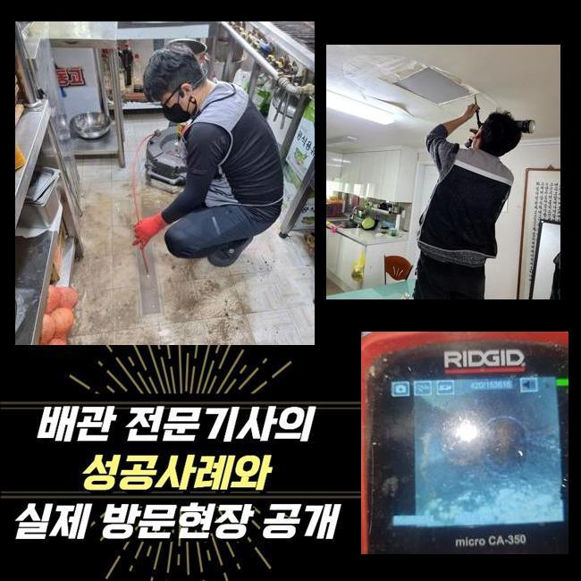
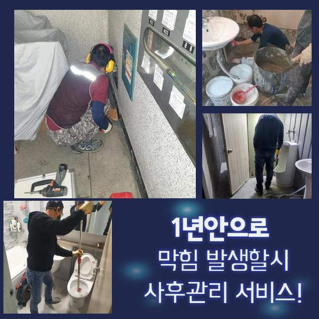
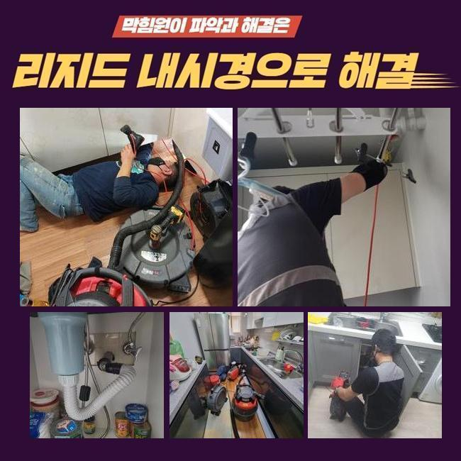
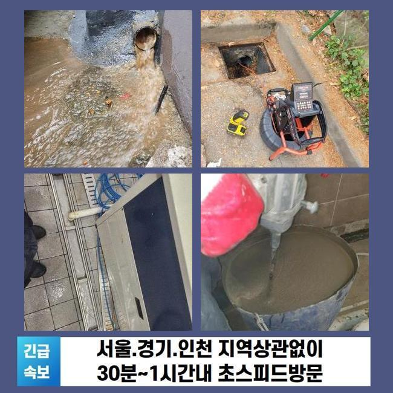

🏠 분당동 하수구 막힘 성남 수내동 급식실 맨홀 역류 고압세척 전문 설비 업체
성남 분당동 하수구막힘 전문 시공 후기

📋 작업 개요
- 위치: 성남 분당동, 분당동, 성남
- 서비스 유형: 하수구막힘, 배관막힘, 맨홀막힘, 집수정막힘, 역류해결, 뚫는업체, 배관청소, 고압세척, 설비공사
- 작업 일시: 2025. 8. 16. 10:10
- 업체명: 하수구수사대 (010-5615-2118)
🔍 문제 상황
성남 분당동하수구역류 금곡동 오수맨홀청소 설비공사
최근에 주택에 방문드려 바깥쪽에 있던 하수관을 시정했는데요
전문성이 뛰어난 기계들을 써서 확실히 청소를 했어요
물들이 안내려가는 증세들이 야기된것은 열흘정도라고 하셨는데요
관로들은 물들이 흘러가며 자연스럽게 이물들이 흘러가는데 내부에서부터 계속해서 축적되다가 개별관로가 막힙니다
잔해물의 양들이 많거나 덩어리가 진 상태면 심화될 수 밖에요
이물의 형태에 따라 전부 배출되는데에는 제약이 있어서입니다
이렇게 하수관이 막혀버리는 증세가 생겨나면 보통의 조치로서 개선들에 다가서지 못하는 장소가 많은데요
의뢰인분들이 셀프대처로 보통 시도하는건 클린용액이라던지 식초와 같은것을 부으시는 것일텐데요
문제발생 후 기간이 많이 안지났을때 효과를 볼 수 있는 방법이겠지만 바깥이라면 괄목할만한 효과가 없어요
바깥에서 결함들이 드러날 때엔 자가조치로 조치해주는게 힘들어 전문진의 해결책을 고려해보는게 좋겠습니다

🔎 원인 분석
💡 전문가 진단: 정밀 진단 장비를 사용하여 슬러지의 고착 여부를 판명하고 타격/세척 작업을 실시했습니다.
전문진들의 해결과정으로서 현장에서 어떠한 영향으로 막히게되었는지 오차없는 원인들을 짚어내는건 기본이고 자가적인 방식과달리 안정적으로 이물을 청소해 오랫동안 하수관을 깨끗히 유지시킬 수 있어요
이번 배수정체 또한 저희업체에선 이물제거에 최적화된 장치들을 활용하여 확실히 잔해들도 제거하여 심층부까지 뚫어냈어요
진단 결과 밖에 위치한 관로들에서 증상이 생긴것이였고 시정해보는것이 불가능해 내방을 문의하셨죠
저희들은 고객님의 시간이 가능할 경우 바로 찾아뵈어 해당 장소에서 일련의 과정들을 들어갑니다
의뢰인분의 상담을 받아보니 문제의스팟은 마당쪽이였어요
단독주택 외부에 존재하는 배수관이 막히게되어 비들이 내릴때 넘쳐버리는 상태라고 하셨어요
특히 우천 시 다양한 쓰레기와 외부유입물 등 여러가지의 오염물들이 흘러들어가요
수도를 이용하면 불현듯 하수관으로 안흘러가는 현상이 빈번하다고 말씀하셨어요
처음에는 고객분은 알아서 나아질까 하여 조치들을 미룬 상태라고 하셨어요
예기치못하게 미루어서 그런지 예고없이 수도들이 전혀 그대로였다고 합니다
그리하여 며칠동안에 시간들이 지나고서 통수되는 현상을 보시고서 얼른 시정해야겠다며 연락주신것이였죠

🔧 작업 과정
단독으로 이루어진 형태라 타 세대에게 피해들을 전가시키진않겠으나 평상 시에 관리들이 요구되는 장소에요
1시간 내 출동이 실시되는 곳들이 잘 보이지 않아 난처하셨는데 저희전문진들은 바로 가능해서 작업요청이 이루어진것인데요
저희전문진들은 평일을 넘어 공휴일에도 찾아뵙고 빨간날이라도 청소해드리고 있기에 의뢰를 받고서 달려가 수리에 몰두했어요
배수관은 좁기에 육안으로 관찰하기에는 한계들이 있습니다
각 관로에 내시경을 삽입해 심층부 부근 포인트에 오염물질들이 어떠한 모습으로 자리했는지 관찰하는데요
내시경기기로 쌓인 잔해물질들을 어떤 방식으로 제거시켜야하는지 판단되면 합리적인 방식들을 선정합니다
우선 샤프트기기를 이용해보고 집수정쪽은 고수압의 기계들을 운용키로 결론 지었어요
샤프트장치는 몸체부분과 연결되어있는 케이블에 사슬모양의 노커부품이 붙어있는데 이 노커부품이 벽측에 흡착된 딱딱한 것들을 분쇄시키는 장치에요
상황에 알맞는 기계들을 통해서 빈틈없이 오류들을 잡아냈죠
작업을 할 때에 만일 작업에 뚫음이 불가하다면 땡전 한 푼 안받는다고 고지해드립니다
저희의경우 애초에 현장에 내방하는 경우 출장관련 금액을 따로 요구하지않고 방문하므로 금액적인 과중이 덜하게되고 뚫지못한다면 금액들은 발생되지 않으므로 편히 의뢰해보세요!
방문 시 작업하고 괄목할만한 개선없이 철수하며 출장에 소요되는 비용들을 받는 절차들은 없는것을 약속합니다
방문드렸던 장소의 경우 외부에 존재하는 곳들로서 흙들이 흘러들어갔었고 침전된 기름성분과 한데 섞여 점성이 짙고 딱딱하게 굳어버렸죠
각 이물들끼리 뭉친 탓에 중심구간에서부터 배수공간들을 내주었죠
만성적인 고착이 발생해 간단하게 해결되는것은 아니었는데 깊은 지점들까지 청소시켜야 했으므로 집수시설부터 고압노즐 장치를 사용해주어야되는 상황들이었습니다
고수압의 기계들을 통해서 뒤탈없이 조치가 요구되는 현상이었습니다
내시경카메라를 사용하면서 계속해서 작업해주었지만 물들이 제대로 흐르는 상황들이 아니었습니다
그 까닭으로는 폐기물과 기름성분이 구간별로 심층부까지 쌓이게되어 흡착된 형태였습니다


✅ 작업 완료
샤프트장치가 안닿는 스팟으로 고압노즐분사가 요구됐습니다
이후에 고수압의 기기를 써 기름성분을 타격하며 깊숙히 흡착된 잔해물들을 작게 만들어 제거시켰어요
빈틈없이 제거시키니 점차 공간들이 생기고 배수들이 진행되었고 내측의 지점도 통수들이 진행되었어요
이 상황들을 의뢰인에게 고지하고 해당 장소의 해결은 종료되었죠
재발하는 상황을 막기위하여 평상시에 지속적으로 관리에 힘쓰시기 바라고 혹여 1년내에 또 생겨나면 저희들이 무상보증을 실시하고 있으니 걱정 붙들어매세요!




⚠️ 하수구 배관 막힘 예방 및 관리 가이드
- ✅ 머리카락, 비닐, 물티슈 등 물에 분해되지 않는 이물질은 하수구 유입을 절대 금지해 주세요.
- ✅ 하수구 거름망을 씌우고 모여진 이물질은 주기적으로 쓰레기통에 바로 비워주셔야 합니다.
- ✅ 배관 노후가 심할 경우 이물질이 더 쉽게 걸리므로 주기적인 배관 세척(고압세척 등)을 권장합니다.
- ✅ 작업 후 1년 이내 재발 시 하수구수사대에서 무상 A/S 보증 서비스를 제공합니다.
💡 핵심 정리
- 확실한 장비 작업(내시경 점검 및 샤프트 스케일링)으로 원인을 뿌리 뽑습니다.
- 작업 후 1년 이내에 동일한 부위 재발 시 100% 무상 A/S 서비스를 보장합니다.
- 서울 · 경기 · 인천 전 지역에 24시간 언제든 긴급 출동할 수 있도록 항시 대기 중입니다.
❓ 자주 묻는 질문 (FAQ)
🚨 성남 분당동 하수구막힘 문제로 고민이신가요?
정확한 원인 진단과 확실한 시공으로 재발 없는 해결을 약속드립니다.
24시간 긴급 출동 | 서울 · 경기 · 인천 전지역 | 1년 내 재발 시 무상 A/S